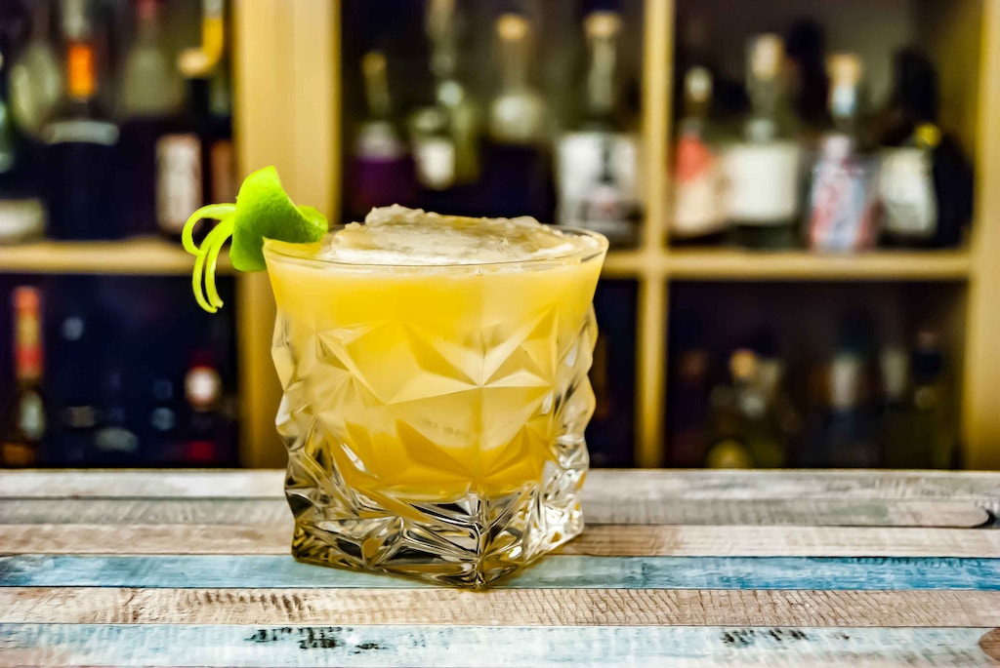

Classic Whiskey Sour

Description
This classic Whiskey Sour recipie is sweet and sour at the same time.
Ingredients
- 1 tot Whiskey (maybe not your best whiskey)
- 200ml fresh squeezed lemon juice
- Simple syrup or maple syrup
- Ice
- Slice of lemon as a garnish
Steps
- Add the whiskey, lemon juice and syrup and mix thoroughly
- Add ice to a glass
- Throw in the garnish